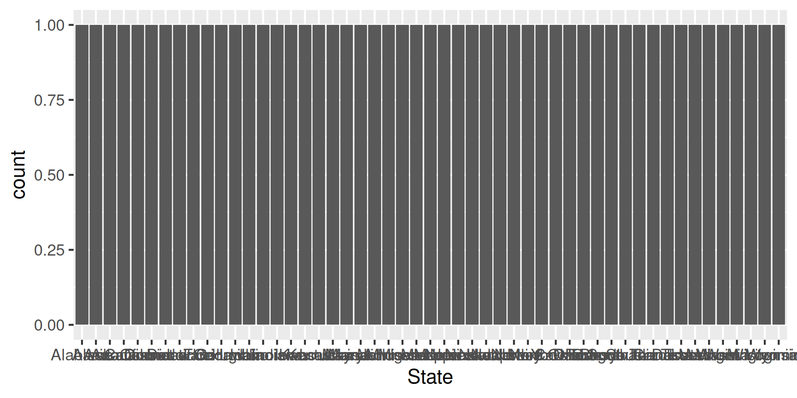
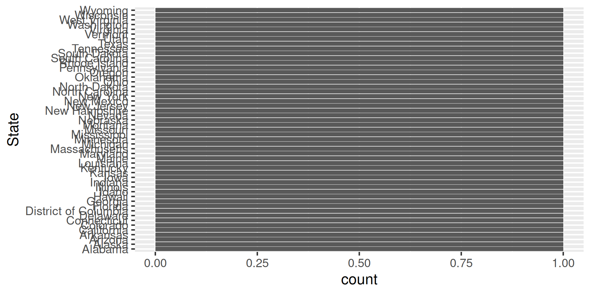
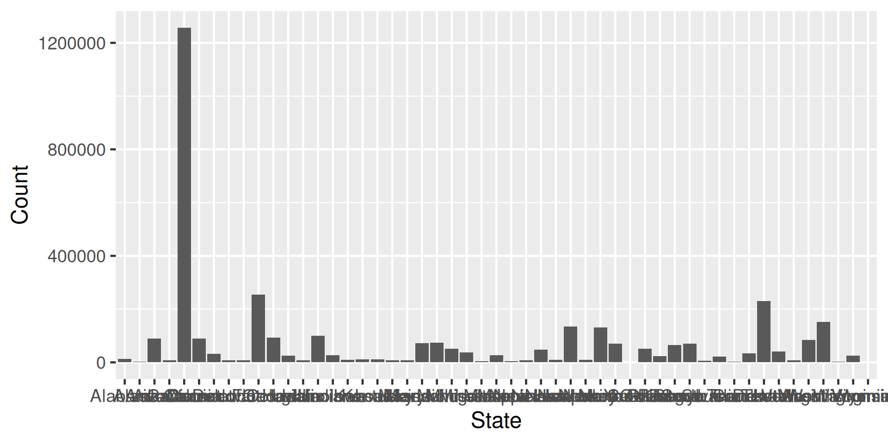
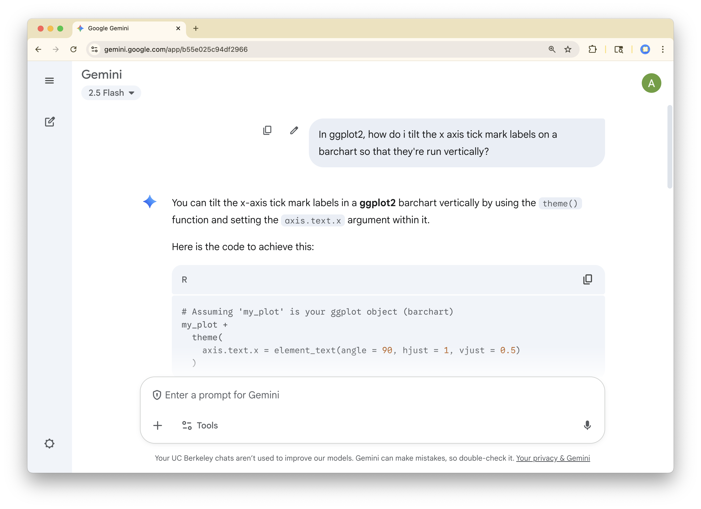
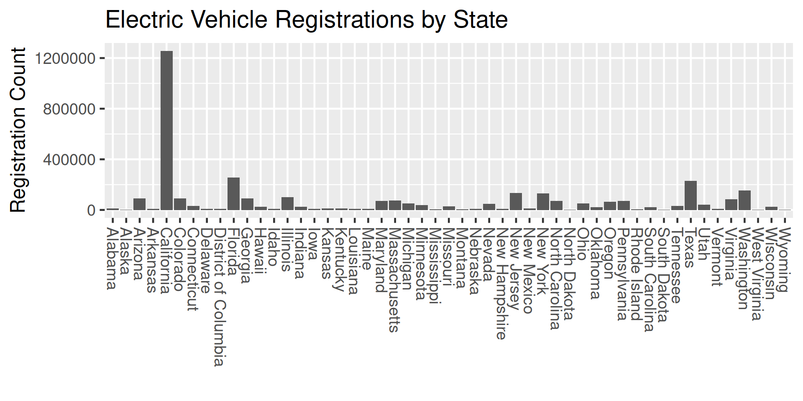
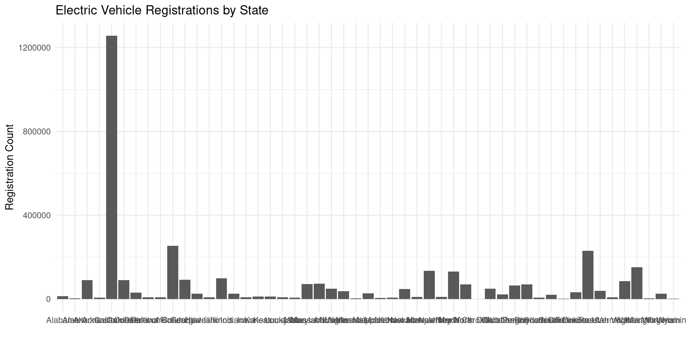
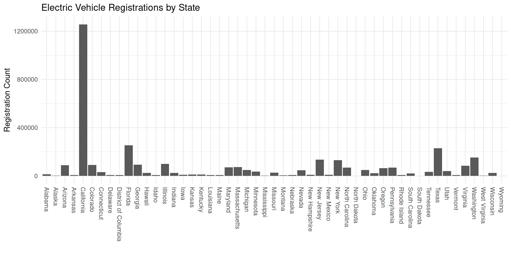
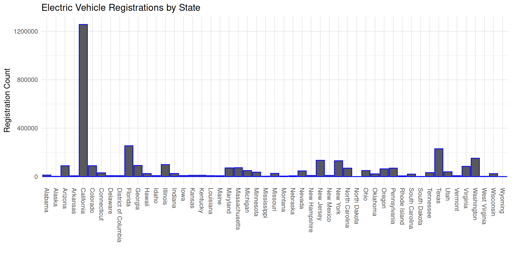
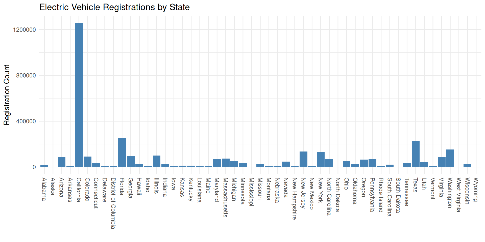
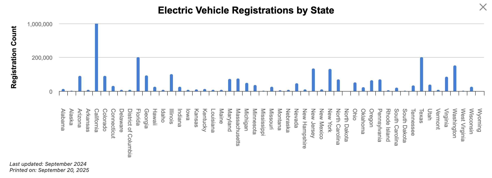

(miniconda3) (base) andrewbray@MacBookPro fall-2025-private % cd 17-eda/data
(miniconda3) (base) andrewbray@MacBookPro data % ls
ev-registrations.csv ev-xlsx.png
(miniconda3) (base) andrewbray@MacBookPro data % cat ev-registrations.csv
State,Count
Alabama,"13,047"
Alaska,"2,697"
Arizona,"89,798"
Arkansas,"7,108"
California,"1,256,646"
Colorado,"90,083"
Connecticut,"31,557"
Delaware,"8,435"
District of Columbia,"8,066"
Florida,"254,878"
Georgia,"92,368"
Hawaii,"25,565"
Idaho,"8,501"
Illinois,"99,573"
Indiana,"26,101"
Iowa,"9,031"
Kansas,"11,271"
Kentucky,"11,617"
Louisiana,"8,150"
Maine,"7,377"
Maryland,"72,139"
Massachusetts,"73,768"
Michigan,"50,284"
Minnesota,"37,050"
Mississippi,"3,590"
Missouri,"26,861"
Montana,"4,608"
Nebraska,"6,920"
Nevada,"47,361"
New Hampshire,"9,861"
New Jersey,"134,753"
New Mexico,"10,276"
New York,"131,250"
North Carolina,"70,164"
North Dakota,959
Ohio,"50,393"
Oklahoma,"22,843"
Oregon,"64,361"
Pennsylvania,"70,154"
Rhode Island,"6,396"
South Carolina,"20,873"
South Dakota,"1,675"
Tennessee,"33,221"
Texas,"230,125"
Utah,"39,998"
Vermont,"7,816"
Virginia,"84,936"
Washington,"152,101"
West Virginia,"2,758"
Wisconsin,"24,943"
Wyoming,"1,139"EDA
Exploratory/Explanatory Data Analysis
Agenda
- Tools: Quarto and Positron
- Exploratory Data Analysis
- Explanatory Data Analysis
Quarto
Quarto
Quarto is an open-source scientific publishing system that you can run at the command line.
Source document is
.qmdand output document can be a pdf, a webpage, slides, a dashboard, etc.The source document can hold text, images, videos, and code.
Rendering the source document runs all the code and puts the data products into the output document.
$ quarto render mydoc.qmdMicrosoft Word + Microsoft Excel + a lot more.
Positron
Positron
Positron is an Integrated Development Environment (IDE) that makes it easy to pull together many different tools to do Data Science.
- Shell, R, Editor, Viewer, git, and Quarto all in one place
- Successor to RStudio
- R, Python, and Julia are equal citizens

Questions:
- Sketch the data frame that was used to create this plot.
- Describe the aesthetic mappings and geometry used.
- What is effective about this plot? How could it be improved?
02:30
Exploratory Data Analysis
CSVs
A comma separate value (CSV) file stores tabular data with each row on a new line and each column delimited by a comma. Good for storing R data frames in a linga-franca in your file system.
Reading into R (base R)
State Count
1 Alabama 13,047
2 Alaska 2,697
3 Arizona 89,798
4 Arkansas 7,108
5 California 1,256,646
6 Colorado 90,083
7 Connecticut 31,557
8 Delaware 8,435
9 District of Columbia 8,066
10 Florida 254,878
11 Georgia 92,368
12 Hawaii 25,565
13 Idaho 8,501
14 Illinois 99,573
15 Indiana 26,101
16 Iowa 9,031
17 Kansas 11,271
18 Kentucky 11,617
19 Louisiana 8,150
20 Maine 7,377
21 Maryland 72,139
22 Massachusetts 73,768
23 Michigan 50,284
24 Minnesota 37,050
25 Mississippi 3,590
26 Missouri 26,861
27 Montana 4,608
28 Nebraska 6,920
29 Nevada 47,361
30 New Hampshire 9,861
31 New Jersey 134,753
32 New Mexico 10,276
33 New York 131,250
34 North Carolina 70,164
35 North Dakota 959
36 Ohio 50,393
37 Oklahoma 22,843
38 Oregon 64,361
39 Pennsylvania 70,154
40 Rhode Island 6,396
41 South Carolina 20,873
42 South Dakota 1,675
43 Tennessee 33,221
44 Texas 230,125
45 Utah 39,998
46 Vermont 7,816
47 Virginia 84,936
48 Washington 152,101
49 West Virginia 2,758
50 Wisconsin 24,943
51 Wyoming 1,139CSVs
A comma separate value (CSV) file stores tabular data with each row on a new line and each column delimited by a comma. Good for storing R data frames in a linga-franca in your file system.
Reading into R (readr)
# A tibble: 51 × 2
State Count
<chr> <dbl>
1 Alabama 13047
2 Alaska 2697
3 Arizona 89798
4 Arkansas 7108
5 California 1256646
6 Colorado 90083
7 Connecticut 31557
8 Delaware 8435
9 District of Columbia 8066
10 Florida 254878
# ℹ 41 more rowsQ1: What are the cols and rows?
Q1: What are the cols and rows?
# A tibble: 51 × 2
State Count
<chr> <dbl>
1 Alabama 13047
2 Alaska 2697
3 Arizona 89798
4 Arkansas 7108
5 California 1256646
6 Colorado 90083
7 Connecticut 31557
8 Delaware 8435
9 District of Columbia 8066
10 Florida 254878
# ℹ 41 more rows- Unit of observation: a state (or DC)
- Variables: name (character) and registration count (double)
A description of the variables is often stored in a separate file called a data dictionary.
Q2: Is there any missing data?
Option 1: Total missing counts
# A tibble: 1 × 1
n_missing
<int>
1 0Q3: What is the distribution of count?
Q3: What is the distribution of count?

Q3: What is the distribution of count?

geom_bar()
geom_bar() counts up the number of observations in each level of a single variable, then draws bars up to that height.
# A tibble: 344 × 8
species island bill_length_mm bill_depth_mm flipper_length_mm body_mass_g
<fct> <fct> <dbl> <dbl> <int> <int>
1 Adelie Torgersen 39.1 18.7 181 3750
2 Adelie Torgersen 39.5 17.4 186 3800
3 Adelie Torgersen 40.3 18 195 3250
4 Adelie Torgersen NA NA NA NA
5 Adelie Torgersen 36.7 19.3 193 3450
6 Adelie Torgersen 39.3 20.6 190 3650
7 Adelie Torgersen 38.9 17.8 181 3625
8 Adelie Torgersen 39.2 19.6 195 4675
9 Adelie Torgersen 34.1 18.1 193 3475
10 Adelie Torgersen 42 20.2 190 4250
# ℹ 334 more rows
# ℹ 2 more variables: sex <fct>, year <int>geom_bar()
geom_bar() counts up the number of observations in each level of a single variable, then draws bars up to that height.
Summarizing with counts
Summarizing with counts
# A tibble: 3 × 2
island n
<fct> <int>
1 Biscoe 168
2 Dream 124
3 Torgersen 52geom_col()
geom_col() takes one column of categories and draws a bar for each up to the height of a second column of counts.
Q3: What is the distribution of count?


Q3: What is the distribution of count?

Two types of Viz
Exploratory Data Analysis (EDA)
Explanatory Data Analysis
Explanatory Data Analysis
Goal #1
- Display the registration counts in a manner that makes it easy to see the counts of each individual state equally well.
Labels
The labels on the plot can refer to many different places where text is added to describe what is plotted.
- title
- subtitle
- x-axis
- y-axis
- legends
In ggplot2, these are arguments to a labs() layer.
titlesubtitlecolorfillsizeshape
Labels

Themes
Themes describe a set of visual design choices made for the plot on things like the background, the gridlines, the axes, the tick marks, and the fonts.
Some ggplot2 themes (each one can be added as layer)
theme_gray(): the defaulttheme_bw()theme_minimal()
Themes
Themes

Themes
Themes
Error in `theme_minimal()`:
! unused argument (axis.text.x = element_text(angle = 270, hjust = 0, vjust = 0.5))Themes
Themes

Themes
Themes describe a set of visual design choices made for the plot on things like the background, the gridlines, the axes, the tick marks, and the fonts.
Some ggplot2 themes (each one can be added as layer)
theme_gray(): the defaulttheme_bw()theme_minimal()
theme()will change defaults of the exiting theme, so add it last.
Setting Aesthetics
Setting Aesthetics

Setting Aesthetics
Setting Aesthetics


